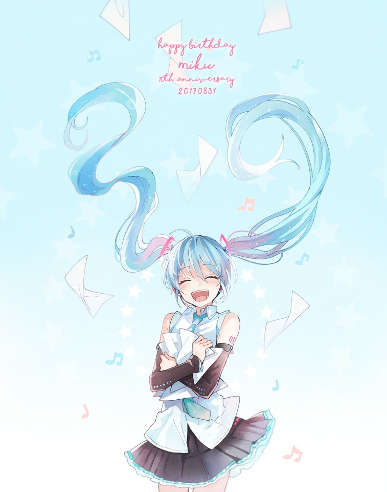

하츠네 미쿠(初音ミク)는 일본의 크립톤 퓨처 미디어 사가 개발한 음성 합성 소프트웨어 VOCALOID2를 사용한 음원이자 캐릭터 보컬 시리즈 1번 이미지 캐릭터다. 2007년 8월 31일에 발매되었다. 2017년 8월 31일자로 10주년을 맞았다. 타임지 2014년의 가장 영향력 있는 가상의 캐릭터 8위에 선정되기도 하였다.

프로그램의 성능이 개선되어 더 자연스러운 노래를 부를 수 있는 동시에 하츠네 미쿠라는 이름과 캐릭터성을 부여했기 때문에 인터넷 팬 캐릭터로도 대성해서 니코니코 동화에서 선풍적인 인기를 끌고 있다. 창작음악은 물론 팬아트도 활발하게 생성되고 있다. 한국에서도 니코동에 가는 사람이 늘어서인지 인기가 있다.